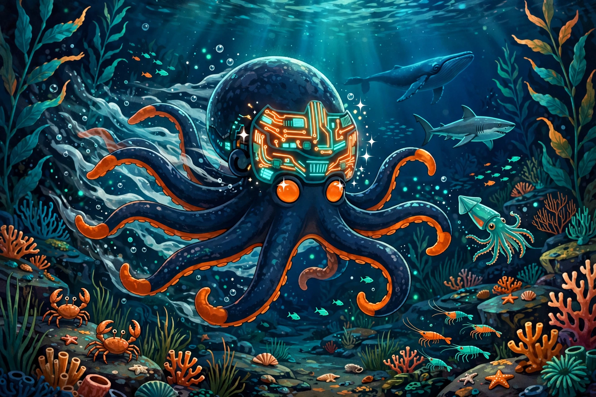
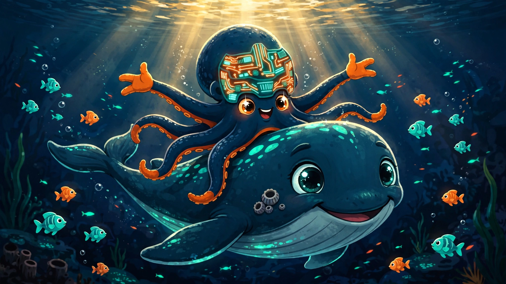
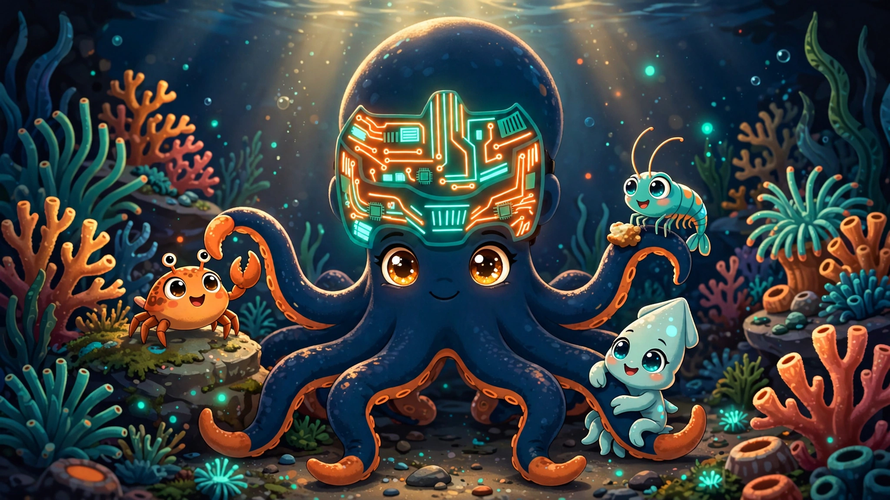
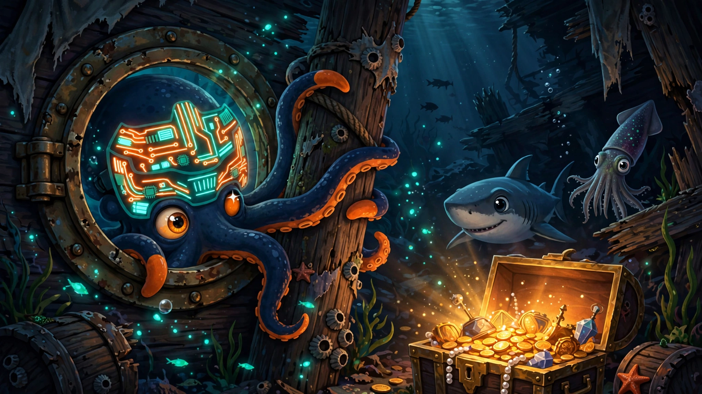

Nightstone
The cybernetic octopus behind Honed Signal.
Night (the dark brand) + stone (the hone, the whetstone). Eight arms, one for every direction the signal can travel. His circuit faceplate glows with the same teal-to-orange gradient as the brand family — the signal cutting through the noise, made flesh. Or made octopus.
Here's his story so far, in pictures:



